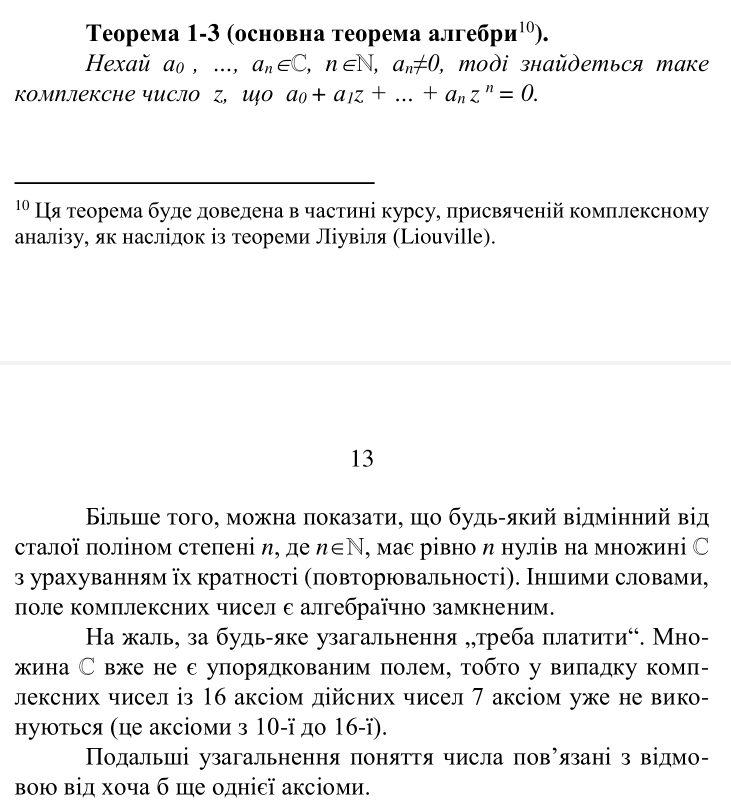

Комплексне число
Комплéксним числом називається упорядкована пара $(x, y)$ дійсних чисел, для якої наступним чином визначені рівність, арифметичні дії та нерівність:
1) $(x, y) = (x_1, y_1) \iff (x = x_1)\, \& \, (y=y_1)$
2) $(x, y) + (x_1, y_1) \equiv (x+x_1, y+y_1) \quad (x, y)(x_1, y_1) \equiv (xx_1-yy_1, xy_1+x_1y)$
3) $(x,0) \leq (x_1,0) \iff (x \leq x_1)$.
1) $(x, y) = (x_1, y_1) \iff (x = x_1)\, \& \, (y=y_1)$
2) $(x, y) + (x_1, y_1) \equiv (x+x_1, y+y_1) \quad (x, y)(x_1, y_1) \equiv (xx_1-yy_1, xy_1+x_1y)$
3) $(x,0) \leq (x_1,0) \iff (x \leq x_1)$.
Чертов с.3
Алгебраїчна форма комплексного числа
$$z = x + iy$$
Чертов с.4
Афікс комплексного числа
Точка на площини з декартовими координатами $(x, y)$ цього числа.
Чертов с.6
Тригонометрична форма комплексного числа
$$z = \rho (\cos\varphi + i \sin \varphi)$$
Це випливає з:
$$ z = x + iy = $$
$$ = \sqrt{x^2 + y^2} \left( \cos \left(\arctan \frac{y}{x} + 2 \pi k\right) + i \sin \left( \arctan \frac{y}{x} + 2 \pi k \right)\right) \text{, де } k \in \mathbb{Z} $$
Ну і власне перехід:
$$ x = \rho \cos \varphi $$
$$ y = \rho \sin \varphi $$
Або в іншу сторону:
$$ \rho = \sqrt{x^2 + y^2},\ \varphi = \arctan \frac{y}{x} $$
Чертов с. 6
Модуль або абсолютна величина комплексного числа
$$ |z| = \varphi = \sqrt{x^2 + y^2} $$
Чертов с.7
1-1 Модуль комплексного числа має наступні властивості
а) $|(x,0)| = |x|$
б) $||z|| = |z|$
в) $|z|>0$, якщо $z≠(0,0)$ і $|z|=0$, якщо $z=(0,0)$
г) $z \cdot z = |z|^2$
д) $|z \cdot z_1| = |z| \cdot |z_1|$
е) $\left| \frac{z}{z_1} \right| = \frac{|z|}{|z_1|}$, якщо $z_1≠(0,0)$
ж) Нерівність трикутника: $$ ||z_1|-|z_2||≤ |z_1+ z_2|≤ |z_1|+|z_2| $$ з) Нерівність Коші: $$ \left| \sum_{i=1}^n a_i b_i \right|^2 \leq \sum_{i=1}^n \left| a_i \right|^2 \ \sum_{i=1}^n \left|b_i\right|^2 \text{, де } a_1, a_2, \dots, a_n, b_1, b_2, \dots, b_n \in \mathbb{C} $$
Доведення:
а) $ |(x, 0)| = \sqrt{x^2 + 0^2} = \sqrt{x^2} = |x| $
б) $ \left\| z \right\| = \left\| x + iy \right\| = \left| \sqrt{x^2+y^2} \right| = \sqrt{x^2+y^2} = |z|$
в) Очевидно.
г) Доведено раніше під час введення спряженого комплексного числа
д) $$ |z \cdot z_1 | = \left| (x+iy)(x_1+iy_1) \right| = $$ $$ = \left|(xx_1-yy_1) + (xy_1+yx_1)i \right| = \sqrt{(xx_1-yy_1)^2 + (xy_1+yx_1)^2} = $$ $$ = \sqrt{(x^2 + y^2)(x_1^2 + y_1^2)} = \sqrt{|z|^2|z_1|^2} = |z|\cdot |z_1|$$ е) $$ \left| \frac{z}{z_1} \right| = \left| \frac{x+iy}{x_1 + iy_1} \right| = \left| \frac{xx_1+yy_1}{x_1^2+y_1^2} + i\frac{yx_1-xy_1}{x_1^2 + y_1^2} \right| = $$ $$ \frac{\sqrt{(xx_1+yy_1)^2 + (yx_1-xy_1)^2}}{|z_1|^2} = \frac{\sqrt{x^2(x_1^2+y_1^2) + y^2(x_1^2 - y_1^2)}}{|z_1|^2} = \frac{|z|}{|z_1|^2}$$


б) $||z|| = |z|$
в) $|z|>0$, якщо $z≠(0,0)$ і $|z|=0$, якщо $z=(0,0)$
г) $z \cdot z = |z|^2$
д) $|z \cdot z_1| = |z| \cdot |z_1|$
е) $\left| \frac{z}{z_1} \right| = \frac{|z|}{|z_1|}$, якщо $z_1≠(0,0)$
ж) Нерівність трикутника: $$ ||z_1|-|z_2||≤ |z_1+ z_2|≤ |z_1|+|z_2| $$ з) Нерівність Коші: $$ \left| \sum_{i=1}^n a_i b_i \right|^2 \leq \sum_{i=1}^n \left| a_i \right|^2 \ \sum_{i=1}^n \left|b_i\right|^2 \text{, де } a_1, a_2, \dots, a_n, b_1, b_2, \dots, b_n \in \mathbb{C} $$
Доведення:
а) $ |(x, 0)| = \sqrt{x^2 + 0^2} = \sqrt{x^2} = |x| $
б) $ \left\| z \right\| = \left\| x + iy \right\| = \left| \sqrt{x^2+y^2} \right| = \sqrt{x^2+y^2} = |z|$
в) Очевидно.
г) Доведено раніше під час введення спряженого комплексного числа
д) $$ |z \cdot z_1 | = \left| (x+iy)(x_1+iy_1) \right| = $$ $$ = \left|(xx_1-yy_1) + (xy_1+yx_1)i \right| = \sqrt{(xx_1-yy_1)^2 + (xy_1+yx_1)^2} = $$ $$ = \sqrt{(x^2 + y^2)(x_1^2 + y_1^2)} = \sqrt{|z|^2|z_1|^2} = |z|\cdot |z_1|$$ е) $$ \left| \frac{z}{z_1} \right| = \left| \frac{x+iy}{x_1 + iy_1} \right| = \left| \frac{xx_1+yy_1}{x_1^2+y_1^2} + i\frac{yx_1-xy_1}{x_1^2 + y_1^2} \right| = $$ $$ \frac{\sqrt{(xx_1+yy_1)^2 + (yx_1-xy_1)^2}}{|z_1|^2} = \frac{\sqrt{x^2(x_1^2+y_1^2) + y^2(x_1^2 - y_1^2)}}{|z_1|^2} = \frac{|z|}{|z_1|^2}$$
Чертов с.7
1-2 Аргумент комплексного числа має наступні
властивості


Чертов с.10
Формула Муавра. Корень із комплексного числа

Чертов с.11
Основна теорема алгебри

Чертов с.12
Послідовність комплексних чисел
... - це перенумерована нескінченна множина комплексних чисел. Позначають як ${z_n}$.
Чертов с.19 Свешников с.19
Границя послідовності
Число $z$ називається границею послідовності ${z_n}$, якщо для будь якого додатнього числа $\varepsilon$ можна вказати такий номер $N(\varepsilon)$, починаючи з якого всі елементи $z_n$ цієї послідовності задовільняють нерівність:
$$ \forall \varepsilon > 0 \quad \exists N \in \mathbb{N} \quad \forall n \geq N \quad (|z_n-z| < \varepsilon) $$
Чертов с.19 Свешников с.19
Збіжна послідовність
Послідовність ${z_n}$, що має границю $z$, називається збіжною до $z$, що записується у вигляді:
$$ \lim_{n \to \infty} z_n = z $$
Чертов с.19 Свешников с.19
Епсілон окіл точки
... - множина точок $z$ комплексної площини, що лежить всередині окружності радіусом $\varepsilon$ з центром в точці $z_0$, при $|z-z_0| < \varepsilon$.
Чертов с.20 Свешников с.20
3-1 1.1 Необхідна і достатня умова збіжності послідовності
Необхідною і достатньою умовою збіжності послідовності ${z_n}$ є збіжність послідовностей дійсних чисел ${a_n}$ і ${b_n}$, при $z_n = a_n + b_n$.
Доведення:
Якщо послідовність ${z_n}$ збігається до числа $z = a + ib$, то для будь-якого $\varepsilon > 0$ $|a_n - a| \leq |z-n| < \varepsilon \ $ і $\ |b_n - b| < \varepsilon \ $ при $\ n \geq N(\varepsilon)$. Це і доводить збіжність послідовностей ${a_n}$ та ${b_n}$ до $a$ та $b$ відповідно.
Обернене твердження випливає з відношення $|z_n - z| = \sqrt{(a_n - a)^2 + (b_n-b)^2}$, де $a$ і $b$ є границями послідовностей $a_n$ і $b_n$ та $z = a + ib$.
Доведення:
Якщо послідовність ${z_n}$ збігається до числа $z = a + ib$, то для будь-якого $\varepsilon > 0$ $|a_n - a| \leq |z-n| < \varepsilon \ $ і $\ |b_n - b| < \varepsilon \ $ при $\ n \geq N(\varepsilon)$. Це і доводить збіжність послідовностей ${a_n}$ та ${b_n}$ до $a$ та $b$ відповідно.
Обернене твердження випливає з відношення $|z_n - z| = \sqrt{(a_n - a)^2 + (b_n-b)^2}$, де $a$ і $b$ є границями послідовностей $a_n$ і $b_n$ та $z = a + ib$.
Чертов с.20 Свешников с.20
3-2 1.2 Із всякої збіжної послідовності можна виокремити збіжну підпослідовність
Доведення:
${z_n}$ обмежена $\implies$ відповідні їй дійсні послідовності ${a_n}$ і ${b_n}$ обмежені.
${a_n}$ обмежена $\implies$ із неї можна виокремити збіжну підпослідовність ${a_{n_i}}$ границю якої позначимо за $a$.
${a_{n_i}}$ відповідає послідовність ${b_{n_i}}$, що також є обмеженою $\implies$ з неї також можна виокремити збіжну підпослідовність ${b_{n_{i_k}}}$, границю якої позначимо за $b$.
При цьому відповідна послідовність ${a_{n_{i_k}}}$ все ще збігається до $a$ $\implies$ послідовність комплексних чисел ${z_{n_{i_k}}} = {a_{n_{i_k}} + ib_{n_{i_k}}}$ також є збіжною, причому $\lim_{n_{i_k} \to \infty} z_{n_{i_k}} = z = a + ib$ $_\blacksquare$.
${z_n}$ обмежена $\implies$ відповідні їй дійсні послідовності ${a_n}$ і ${b_n}$ обмежені.
${a_n}$ обмежена $\implies$ із неї можна виокремити збіжну підпослідовність ${a_{n_i}}$ границю якої позначимо за $a$.
${a_{n_i}}$ відповідає послідовність ${b_{n_i}}$, що також є обмеженою $\implies$ з неї також можна виокремити збіжну підпослідовність ${b_{n_{i_k}}}$, границю якої позначимо за $b$.
При цьому відповідна послідовність ${a_{n_{i_k}}}$ все ще збігається до $a$ $\implies$ послідовність комплексних чисел ${z_{n_{i_k}}} = {a_{n_{i_k}} + ib_{n_{i_k}}}$ також є збіжною, причому $\lim_{n_{i_k} \to \infty} z_{n_{i_k}} = z = a + ib$ $_\blacksquare$.
Чертов с.20 Свешников с.20
Критерій збіжності Коші
Послідовність ${z_n}$ збіжна тоді і тільки, коли
$$ \forall \varepsilon > 0 \quad \exists N \in \mathbb{N} \quad \forall n \geq N \quad \forall m \in \mathbb{N} \quad |z_{n+m} - z_n| < \varepsilon $$
Доведення:
Для доведення критерія Коші використаємо еквівалентність збіжності послідовності ${z_n}$ і послідовностей дійсних чисел ${a_n}$ і ${b_n}$, а також тиєю обставиною, що критерій Коші є необхідною і достатньою ознакою збіжності послідовностей дійсних чисел.
Необхідність
${z_n}$ збіжна $\implies$ збіжні ${a_n}$ і ${b_n}$ $\implies$
$\forall \varepsilon > 0 \quad \forall m > 0$ $$ |a_n - a_{n+m}| < \frac{\varepsilon}{2} \text{, при } n \geq N_1(\varepsilon)$$ $$ |b_n - b_{n+m}| < \frac{\varepsilon}{2} \text{, при } n \geq N_2(\varepsilon)$$ Взявши за $N(\varepsilon)$ більше з $N_1$ $N_2$ з нерівності трикутника отримуємо при $n > N(\varepsilon)$: $$ |z_n - z_{n+m}| \leq |a_n - a_{n+m}| + |b_n - b_{n+m}| $$
Достатність
Із відношення з умови теореми при $n \geq N$ випливають нерівності $$ |a_n - a_{n+m}| \leq |z_n - z_{n+m}| < \varepsilon $$ $$ |b_n - b_{n+m}| \leq |z_n - z_{n+m}| < \varepsilon $$ що і є достатньою умовою збіжності послідовностей ${a_n}$ та ${b_n}$, тобто збіжності ${z_n}$ $_\blacksquare$.
Для доведення критерія Коші використаємо еквівалентність збіжності послідовності ${z_n}$ і послідовностей дійсних чисел ${a_n}$ і ${b_n}$, а також тиєю обставиною, що критерій Коші є необхідною і достатньою ознакою збіжності послідовностей дійсних чисел.
Необхідність
${z_n}$ збіжна $\implies$ збіжні ${a_n}$ і ${b_n}$ $\implies$
$\forall \varepsilon > 0 \quad \forall m > 0$ $$ |a_n - a_{n+m}| < \frac{\varepsilon}{2} \text{, при } n \geq N_1(\varepsilon)$$ $$ |b_n - b_{n+m}| < \frac{\varepsilon}{2} \text{, при } n \geq N_2(\varepsilon)$$ Взявши за $N(\varepsilon)$ більше з $N_1$ $N_2$ з нерівності трикутника отримуємо при $n > N(\varepsilon)$: $$ |z_n - z_{n+m}| \leq |a_n - a_{n+m}| + |b_n - b_{n+m}| $$
Достатність
Із відношення з умови теореми при $n \geq N$ випливають нерівності $$ |a_n - a_{n+m}| \leq |z_n - z_{n+m}| < \varepsilon $$ $$ |b_n - b_{n+m}| \leq |z_n - z_{n+m}| < \varepsilon $$ що і є достатньою умовою збіжності послідовностей ${a_n}$ та ${b_n}$, тобто збіжності ${z_n}$ $_\blacksquare$.
Чертов с.21 Свешников с.21
Нескінченно зростаюча послідовність
... - це послідовність комплексних чисел ${z_n}$ така, що
$$\forall \varepsilon > 0 \quad \exists N \in \mathbb{N} \quad \forall n \geq N \quad |z_n| > \varepsilon $$
Чертов с.21 Свешников с.21
Нескінченно віддалена точка
... - точка до якої збігається нескінченно зростаюча послідовність.
Чертов с.22 Свешников с.22
Повна комплексна площина
... - це сукупність звичайної комплексної площини та нескінченно віддаленої точки.
Чертов с.22 Свешников с.22
Однозначна функція комплексної змінної
... - це відношення по якому кожному комплексному числу $z$ із множини комплексних чисел $D$ відповідає єдине комплексне число $w$. Таке відношення позначають $w = f(z)$ або $f: z \to w$.
Чертов с.23 Ейдерман с.25
Границя функції комплексної змінної
Число $w_0$ називається границею (за Гейне) функції $f: E \to C$ при $z \to z_0$, якщо для будь-якої послідовності ${z_n}$ точок $z_n \in E - z_0$ збіжної до $z_0$, послідовність ${f(z_n)}$ збіжна до $w_0$.
Число $w_0$ називається границею (за Коші) функції $f: E \to C$ при $z \to z_0$, якщо $$\forall \varepsilon > 0 \quad \exists \delta > 0 \quad \forall z \in E \quad (0 < |z-z_0| < \delta \implies |f(z) - w_0| < \varepsilon)$$ Число $w_0$ називається границею (за Коші) функції $f: E \to C$ при $z \to \infty$, якщо $$\forall \varepsilon > 0 \quad \exists \delta > 0 \quad \forall z \in E \quad (|z| > \delta \implies |f(z) - w_0| < \varepsilon)$$
Число $w_0$ називається границею (за Коші) функції $f: E \to C$ при $z \to z_0$, якщо $$\forall \varepsilon > 0 \quad \exists \delta > 0 \quad \forall z \in E \quad (0 < |z-z_0| < \delta \implies |f(z) - w_0| < \varepsilon)$$ Число $w_0$ називається границею (за Коші) функції $f: E \to C$ при $z \to \infty$, якщо $$\forall \varepsilon > 0 \quad \exists \delta > 0 \quad \forall z \in E \quad (|z| > \delta \implies |f(z) - w_0| < \varepsilon)$$
Чертов с.25
Неперервна в точці функція
Функція $f(z)$, визначена на множині $E$, називається неперервною в точці $z_0 \in E$, якщо граничне значення ціяї функції в точці $z_0$ існує та співпадає зі значенням самої функції у цій точці, тобто
$$lim_{z \to z_0} f(z) = f(z_0)$$
або
$$\forall \varepsilon > 0 \quad \exists \delta > 0 \quad \forall z \in E \quad (|z-z_0| < \delta \implies |f(z) - f(z_0)| < \varepsilon)$$
Чертов с.26
Неперервна на множині функція
... - це функція, що неперервна в кожній точці цієї множини.
Чертов с.26
Однолистна в області функція
... - це функція, що в різних точках цієї області приймає різні значення.
Чертов с.27
Показникова форма комплексного числа
$$z = \rho e^{i\varphi}$$
Чертов с.
Гілки багатозначної функції
????
Чертов с.29
Точка розгалуження багатозначної функції
... - така точка, для якої можна вказати $\varepsilon$-окіл, що при однократному обході цієї точки по будь-якому замкненому контуру, що повністю лежить в цьому околі, одна гілка багатозначної функції переходить в іншу.
Чертов с.
Template
Text
Чертов с.